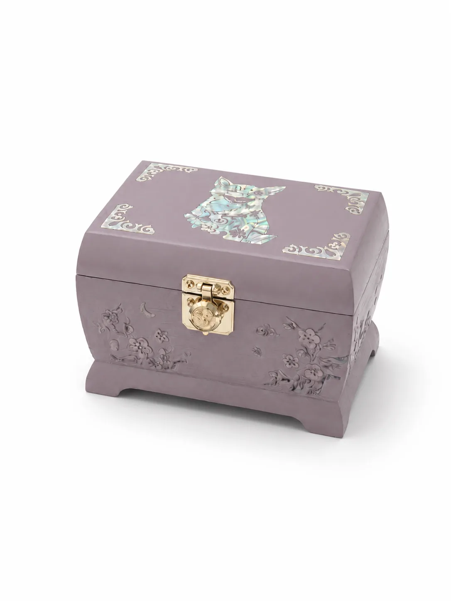
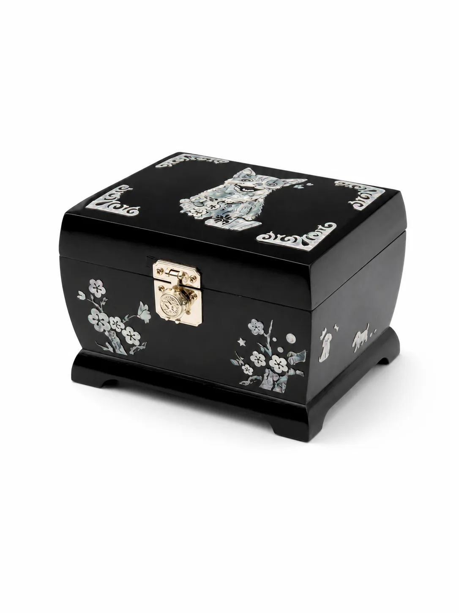
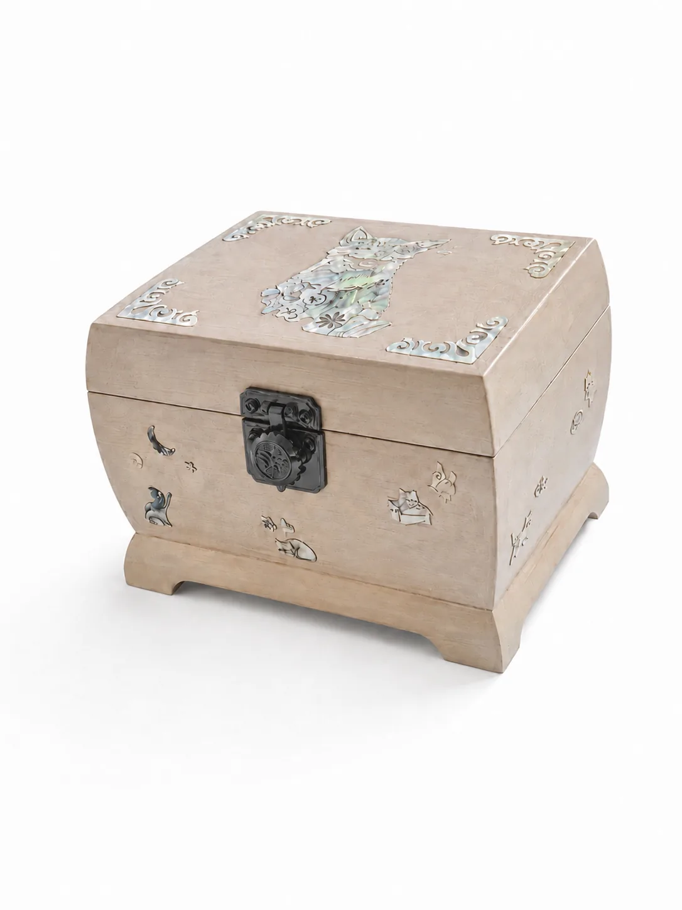
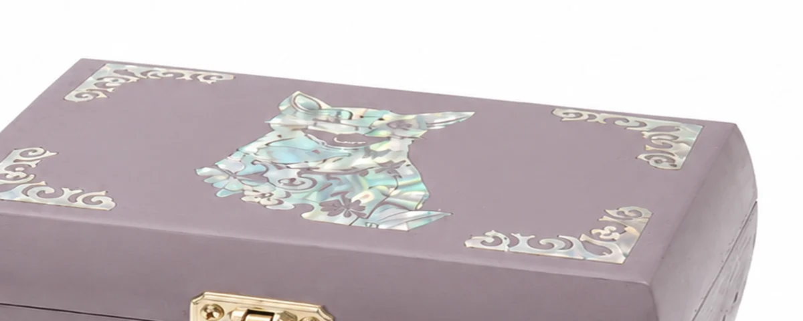

MEMORIAL
아이의 모습을 자개로 새겨, 한 점씩 만듭니다.

사진을 보내주시면 아이의 얼굴과 무늬, 자세를 도안으로 옮깁니다. 그 도안대로 자개를 자르기 때문에, 같은 함이 두 개 나오지 않습니다.
함의 옆면에는 아이가 좋아하던 것을 넣을 수 있습니다. 공, 창가, 나비, 매화 — 이야기가 있는 것이면 무엇이든 도안으로 만들어 상의합니다.
색과 마감은 세 가지 방향으로 제작합니다.
라벤더 · 자개 인물 도안

흑칠 · 매화 도안

연회색 · 자개 인물 도안

도안을 그리고, 실톱으로 자개를 한 조각씩 자르고, 옻칠 표면에 놓은 뒤 다시 칠을 올려 갈아냅니다. 자개가 표면 아래에 잠기기 때문에 시간이 지나도 떨어지지 않습니다.
보는 각도에 따라 색이 달라집니다. 사진으로는 절반도 담기지 않습니다.
아이의 사진과 원하는 내용을 보내주세요. 여러 장이면 도안을 잡기 쉽습니다.
크기와 색, 도안 방향을 함께 정합니다.
도안을 그려 보여드리고, 확인받은 뒤 작업에 들어갑니다.
목재 작업, 옻칠, 나전, 마감 순으로 진행합니다. 중간 과정을 사진으로 보내드립니다.
포장해서 보내드립니다. 직접 방문 수령도 가능합니다.
내부에 유골함을 그대로 넣는 방식과, 별도 내함을 두는 방식 두 가지로 만들 수 있습니다. 화장 업체에서 받으신 함의 크기를 알려주시면 그에 맞춰 제작합니다.
됩니다. 자개 도안은 사진을 그대로 옮기는 것이 아니라 형태를 단순하게 정리하는 작업이라, 얼굴 무늬와 귀·꼬리 형태를 알아볼 수 있으면 충분합니다.
완전히 굳은 옻칠은 옻 알레르기를 일으키지 않습니다. 옻은 굳는 과정에서 성질이 바뀌며, 충분히 건조된 뒤에 보내드립니다.
마른 천으로 닦아주시면 됩니다. 직사광선이 오래 닿는 자리와 난방기구 바로 옆은 피해주세요. 옻칠은 쓸수록 표면이 맑아집니다.
됩니다. 아이의 목걸이, 사진, 발도장, 털을 보관하는 함으로 제작하시는 분도 많습니다. 문의 시 용도를 알려주세요.
옻이 굳는 시간은 줄일 수 없어 제작을 서두르기는 어렵습니다. 다만 일정이 정해져 있다면 문의 시 알려주세요. 가능한 방법을 함께 찾겠습니다.
아이의 사진과 함께 문의를 남겨주시면 순서대로 답변드립니다.